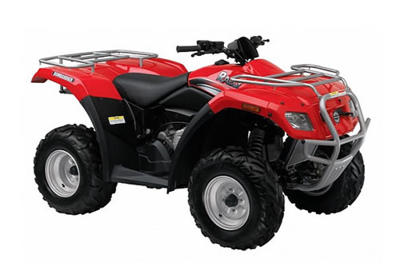
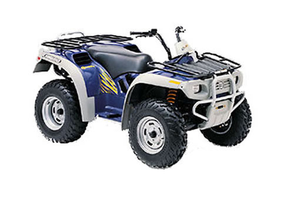
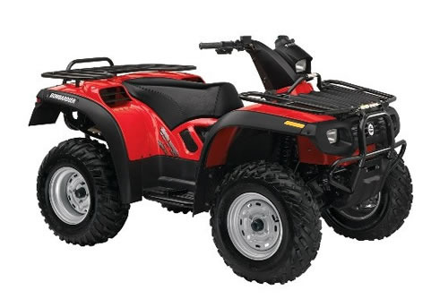

| Bombardier Rally 200 service manual repair 2004 | |
 |
Instant download of the factory repair manual for the 2004 Bombardier Rally 200 atv. Can also be used for other model years. 281 pages. |
 |
| Bombardier Quest 650 service manual repair 2002-2003 | |
 |
Instant download of the factory repair manual for the 2002-2003 Bombardier Quest 650 and Quest 650 XT atvs. 441 pages. |
|
| Bombardier Quest / Traxter 500 650 service manual repair 2004 | |
 |
Instant download of the factory repair manual for the 2004 Bombardier Quest and Bombardier Traxter atvs. Can also be used for the John Deere Buck and John Deere Trail Buck as they are the same atv. 543 pages. |
|